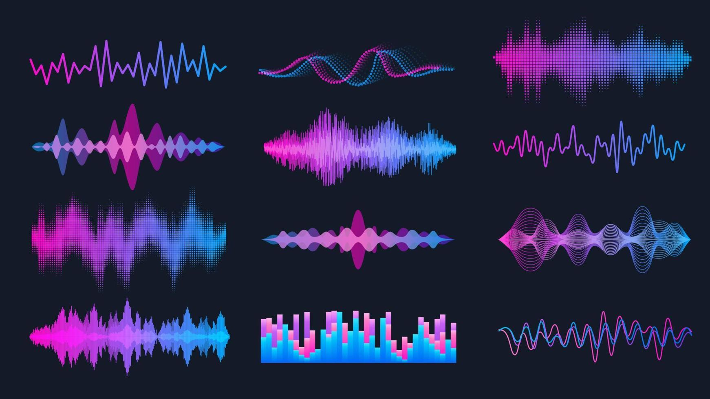
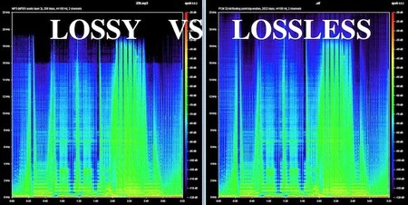

SONIDO
¿Qué son?

Busca reducir drásticamente el tamaño de los archivos de audio para facilitar su almacenamiento y transmisión, como en el streaming de música o la descarga de archivos MP3.
Este proceso se diferencia notablemente de la compresión de rango dinámico (que se usa en la producción musical para nivelar el volumen). En el ámbito de los archivos digitales, la compresión se logra mediante dos enfoques principales: sin pérdida (Lossless) y con pérdida (Lossy).
¿Cómo se forman?
Compresión Sin Pérdida (Lossless)
Este método se enfoca en eliminar la redundancia estadística de la señal digital, lo que significa que encuentra y codifica de manera más eficiente los patrones y datos repetitivos.
Principio: Busca reducir la cantidad de bits necesarios para describir la señal sin descartar ninguna información original. Es similar a cómo funciona un archivo .zip o .rar para texto.
Mecanismos: Utiliza técnicas de codificación de entropía (como la Codificación de Huffman o Lempel-Ziv) y codificación diferencial (donde, en lugar de guardar el valor de cada muestra de audio, solo se almacena la diferencia con la muestra anterior, que suele ser un número mucho menor y requiere menos bits).
Resultado: Garantiza que el archivo descomprimido sea idéntico a nivel de bit al archivo de audio original. La tasa de compresión es moderada (generalmente reduce el tamaño en un 30-70%).
Compresión Con Pérdida (Lossy)
Este es el método más común para archivos como MP3, y se basa en la forma en que el ser humano percibe el sonido para descartar información que es inaudible o poco significativa.
Principio: Elimina la información irrelevante (la que el oído humano no puede escuchar) y, si es necesario, una parte de la información esencial para lograr altas tasas de compresión.
Mecanismos: Psicoacústica
Los algoritmos utilizan un modelo psicoacústico del oído humano para determinar qué partes de la señal pueden descartarse sin que el oyente lo note significativamente.
Enmascaramiento Frecuencial: Un sonido fuerte en una frecuencia dada puede "enmascarar" (ocultar) un sonido más suave en una frecuencia cercana. El algoritmo elimina los datos del sonido enmascarado
Enmascaramiento Temporal: Un sonido fuerte puede enmascarar sonidos más suaves que ocurren inmediatamente antes (pre-enmascaramiento) o después (post-enmascaramiento). Los datos de estos sonidos también se descartan o se representan con menos bits.
Umbral de Audición: Se eliminan las frecuencias que están por debajo del umbral de audición del oído humano.
Cuantificación: Después de identificar la información que no se necesita, el algoritmo cuantifica las muestras restantes con menos precisión (menos bits), lo que introduce un pequeño ruido de cuantificación, pero se "forma" o distribuye ese ruido en frecuencias donde el oído es menos sensible.
Resultado: Permite alcanzar tasas de compresión muy altas (hasta 10:1 o más). La pérdida de datos es irreversible, lo que significa que el archivo descomprimido no es idéntico al original, aunque el objetivo es que la diferencia sea imperceptible para el oído humano a tasas de bits adecuadas.
